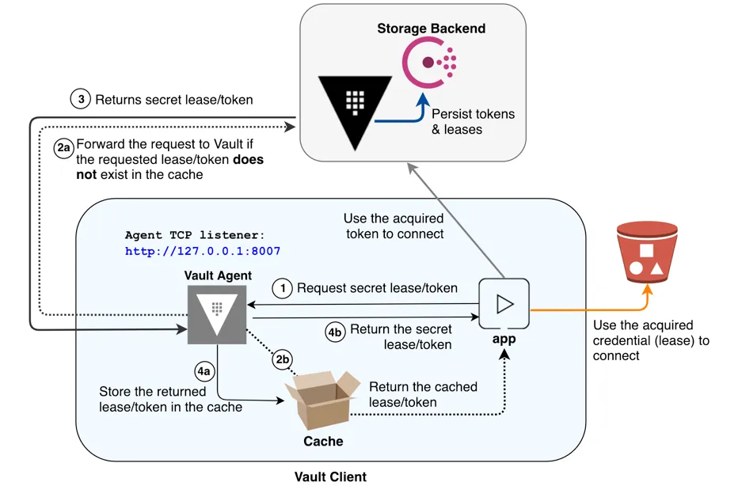

HashiCorp Vault is a tool designed for managing secrets, such as API keys, passwords, and certificates. One of its key features is the ability to generate dynamic secrets on-demand. Dynamic secrets are short-lived credentials that are generated by Vault for a specific purpose and have a limited lifespan. Here's a general outline of how dynamic secrets might work with a database in HashiCorp Vault:
Enable Database Secrets Engine:
First, you would enable the appropriate database secrets engine in Vault. Vault supports various database engines, such as MySQL, PostgreSQL, MongoDB, etc.
Configure Connection to the Database:
Set up the connection details for Vault to communicate with the target database. This includes providing connection strings, authentication details, and other necessary information.
Configure Roles:
Define roles in Vault that specify the level of access and permissions for different types of users or applications. These roles will determine what actions the generated dynamic secrets can perform.
Generate Dynamic Secrets:
When a client or application needs to access the database, it authenticates to Vault and requests dynamic database credentials for a specific role. Vault generates short-lived, database-specific credentials on the fly and returns them to the client.
Automatic Rotation:
Vault can be configured to automatically rotate (renew) dynamic secrets to enhance security. This means that even if a credential is compromised, it will become invalid after a certain period.
Revocation:
Vault provides mechanisms to revoke dynamic secrets before their expiration time if needed. This adds an extra layer of security in case a credential needs to be invalidated immediately.
Monitoring and Auditing:
Vault provides logging and auditing features, allowing you to monitor who accessed which secrets and when. This is crucial for compliance and security purposes.
One common problem we face while creating a secure platform is how to go about managing credential rotation. Typically static credentials are utilised for applications that require access to databases and each credential requires a custodian to manage it's lifecycle. This would involve creating a new credential, updating the credential in a centralised PAM solution and/or the rotation of the consumed credential in the target git repositories and finally scheduling a maintenance window to have each application consume the new credential.
What if we could utilise off the shelf tools to automate the bulk of this process for us with no downtime experienced by your workloads? In this article I will discuss one use case where dynamic credentials can be used and enabled by HashiCorp Vault and the pros and cons of this approach.
Consider the situation where your existing webservice pods require access to a database with user/pass authentication that are currently using static secrets. You want to introduce an automated process to generate and rotate credentials, removing error prone manual processes, adding a customisable TTL to enhance your defense in depth posture and would like to minimise application code rework to achieve this to avoid disrupting the development team’s sprint velocity. Using a number of opensource tools you can setup the automation of the core steps:
1. Setup the password policy and TTL of each credential
2. Automate the generation of new credentials (Username and password to access your database)
3. Automate the deployment of the newly generated credentials for your application to consume.
Vault Database secrets engine
The first two steps require the enabling of the Vault Database secrets engine. This allows Vault to connect to a database to provision new credentials, revoke old credentials and maintain a list of the latest credentials internally as Vault secrets.
Defining the password policy can be found in the documentation here and setting the TTL was covered in the VSO tutorial.
At this stage the Vault secrets will be generated and rotated automatically and there are a number of options available to expose the Vault secrets in Kubernetes for your applications to consume.
One option is to use the Vault Agent Injector pattern which uses a distributed approach where each pod requires a sidecar container to expose the secret to your application. This has a feature to configure a command to execute on each secret rotating event, generally a termination signal for the application to respond and cause the application to restart. One downside is that the application code will need to be updated and tested to support this feature.
One primary benefit of using the Vault Secrets Operator is that it is able to expose a newly rotated Vault secret to your application without any additional application code updates.
Summary
HashiCorp Vault is able to provide out of the box tools (database engine and Vault Secrets Operator) to establish a Kubernetes first class pattern to automate generating, rotating and deploying dynamic database credentials to applications. the use of dynamic database secrets with HashiCorp Vault involves enabling the database secrets engine, configuring the connection to the database, defining roles with specific permissions, and generating short-lived, dynamic credentials for client applications. Automatic rotation and revocation mechanisms enhance security, and monitoring features provide visibility into access for auditing purposes. This approach minimizes the exposure of long-lived credentials, contributing to a more secure and manageable system for accessing sensitive database resources.